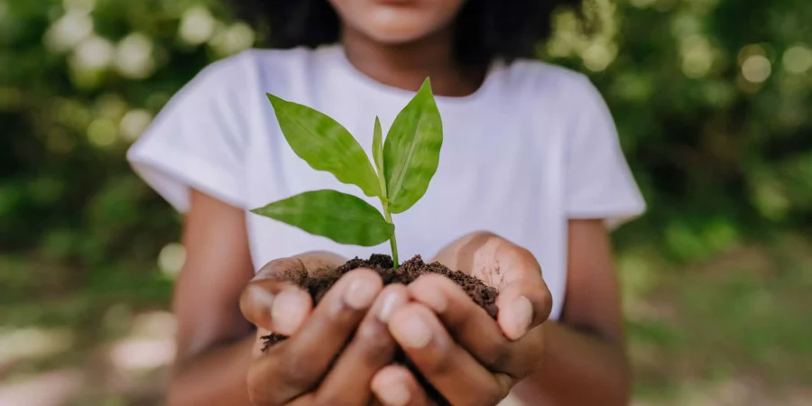

Sobre nós
Bem-vindo ao NovoVerde, um espaço dedicado à conscientização e ação em prol do meio ambiente. Nossa missão é fornecer recursos práticos e informações educativas para indivíduos e comunidades interessados em fazer a diferença ambientalmente. Desde dicas simples para reduzir o consumo de plástico até insights sobre energia renovável e conservação de recursos naturais, estamos aqui para inspirar e capacitar.

Como você pode nos Ajudar?
convidamos você a participar ativamente na proteção do meio ambiente. Você pode ajudar fazendo doações para nossos projetos, compartilhando nosso site para aumentar a conscientização e adotando práticas sustentáveis em seu dia a dia. Cada pequena ação contribui significativamente para um futuro mais verde e sustentável para todos.